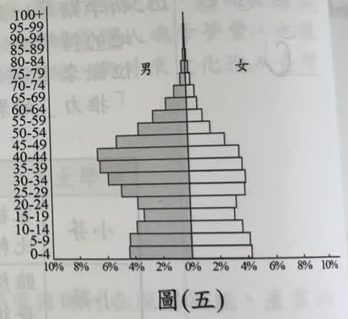
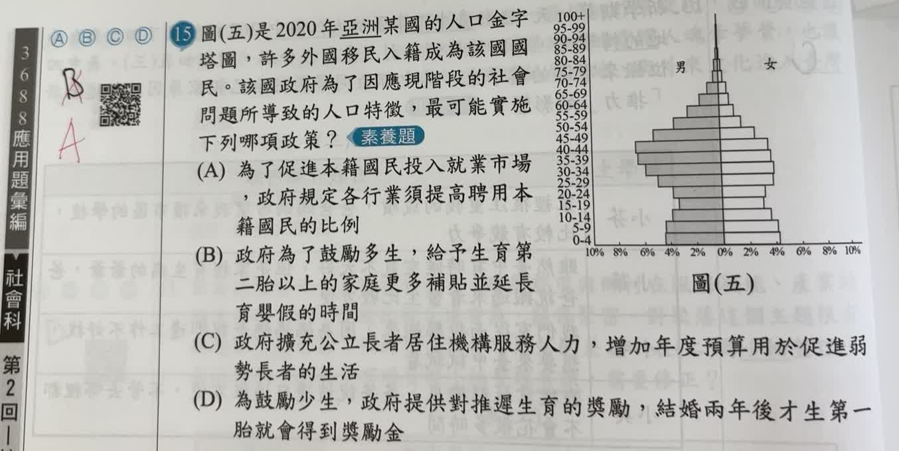

分享原卷｜第15題
完整原題

圖(五)是2020年亞洲某國的人口金字塔圖，許多外國移民入籍成為該國國民。該國政府為了因應現階段的社會問題所導致的人口特徵，最可能實施下列哪項政策？
(A) 為了促進本籍國民投入就業市場，政府規定各行業須提高聘用本籍國民的比例
(B) 政府為了鼓勵多生，給予生育第二胎以上的家庭更多補貼並延長育嬰假的時間
(C) 政府擴充公立長者居住機構服務人力，增加年度預算用於促進弱勢長者的生活
(D) 為鼓勵少生，政府提供對推遲生育的獎勵，結婚兩年後才生第一胎就會得到獎勵金
先想一想，再查看答案、解說與原圖
原卷作答：原卷黑筆B，紅筆訂為A
正確答案：A。青壯年男性特別突出，結合移民線索，最直接對應勞動市場與本籍就業。
逐項解析
| 選項與原句 | 判讀 | 句意與判斷理由 |
|---|---|---|
| (A) 為了促進本籍國民投入就業市場，政府規定各行業須提高聘用本籍國民的比例 | 應選 | 青壯年男性特別突出，結合移民線索，最直接對應勞動市場與本籍就業。 |
| (B) 政府為了鼓勵多生，給予生育第二胎以上的家庭更多補貼並延長育嬰假的時間 | 不選 | 這主要因應少子化，未直接回應圖中最顯著的青壯年男性偏多。 |
| (C) 政府擴充公立長者居住機構服務人力，增加年度預算用於促進弱勢長者的生活 | 不選 | 這主要因應高齡照護，圖中高齡人口並非最突出部分。 |
| (D) 為鼓勵少生，政府提供對推遲生育的獎勵，結婚兩年後才生第一胎就會得到獎勵金 | 不選 | 此為抑制或推遲生育的政策，未直接因應移入人口與就業結構。 |
詳細說明與解題步驟
先比較性別與年齡，而非只把整張圖套成三角形、鐘形或壺形。圖中20多歲至40多歲的男性側明顯比女性側寬，與大量青壯年男性移入的情境相符；題幹也提供移民的線索。
四個政策中，提高本籍國民聘用比例，最直接處理本籍人口與移入人口在勞動市場中的關係，故選A。B偏向生育補助，C偏向長者照護，D偏向推遲生育，都沒有直接對應最突出的性別及勞動年齡結構。
這是依原題人口圖與選項推論政策，不能僅憑金字塔就認定某個特定國家，也不能把「移入工作」與「已取得國籍」視為完全相同概念。
核對註記：已核對題幹、全部選項與必要材料；教材對應課次未確認，歸綜合。
原圖（僅本題）
